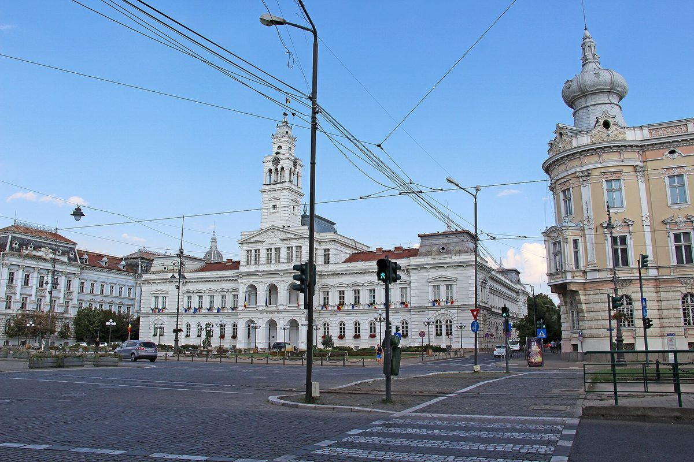

루마니아 아라드시, 시유지 25.5ha에 태양광 24곳·저장장치 짓는 안 시의회 표결에 올려…학교·유치원 등 13개 공공기관 전기 98.5% 충당 추정

400kW씩 모두 9.60MW·저장 2만5,056kWh, 사업비 8,547만여 레이 중 5,590만여 레이는 EU 현대화기금에 신청 예정…11월 20일 신청 마감 맞춰 타당성 조사 접수 이튿날 임시회로
루마니아 서부 아라드시가 시 소유 땅 세 곳에 태양광 발전 단지 24곳과 에너지 저장장치를 지어 학교·유치원·복지·문화시설 등 13개 공공기관이 쓰는 전기를 스스로 만드는 사업을 추진하며, 사업 타당성 조사 승인안(의안 제625호)을 10월 31일 시의회 임시회 표결에 올렸다. 타당성 조사가 추천한 안은 400kW짜리 지상형 태양광 24곳(모두 9.60MW)에 저장 용량 2만5,056kWh를 붙이는 것으로, 배터리는 태양광 전기로만 충전하고 한 곳에서 전력망으로 내보내는 출력은 400kW로 묶으며, 사업 기간은 24개월로 잡았다. 연간 발전량은 약 1만1,344MWh로 추정돼 협력 기관들의 기준 소비량 약 1만1,513MWh의 약 98.5%에 이르고, 온실가스는 해마다 약 6,676톤 줄어들 것으로 계산됐다. 부지는 토지대장에 목초지로 올라 있는 시유지로, 시 외곽 18만4,539㎡에 16곳, 남부 산업지대 4만2,494㎡에 5곳, 산업지대 2만8,073㎡에 3곳을 두며 모두 합치면 약 25.5ha다. 총사업비는 부가세를 포함해 8,547만4,264.24레이로, 시는 이 가운데 5,590만2,813.12레이를 EU 현대화기금(Modernisation Fund)의 공공기관 자가소비용 태양광·저장 공모에 무상 지원으로 신청하고 2,957만1,451.12레이는 시 예산으로 댈 계획이며, 시 부담 중 1,577만8,360.80레이는 필요할 때만 쓰는 예비 한도다. 타당성 조사는 10월 20일 계약한 전기업체가 10월 26일자로 내놓아 30일 시청에 접수됐고 이튿날 곧바로 표결에 부쳐졌는데, 시 기술국은 현대화기금 신청 마감이 11월 20일이어서 서둘렀다고 밝혔으며 표결 결과는 아직 전해지지 않았다.
시민에너지 관점
시가 가진 목초지 약 25.5ha로 학교·유치원·노인돌봄센터 등 13곳이 쓰는 전기의 98.5%를 채울 수 있다는 계산은, 공공요금을 줄일 땅이 이미 지자체 손안에 있다는 것을 보여 준다. 걸리는 것은 속도다 — 용역 계약에서 표결까지 열하루, 시청 접수 이튿날 표결로 이어진 일정에서는 주민이 땅의 쓰임과 2,957만 레이가 넘는 시 부담을 따져 볼 틈이 없다. 기금 마감에 쫓기는 사업일수록 공공 부지 목록과 예상 절감액을 미리 공개해 두고 주민과 지역 조직이 설계 단계부터 함께해야, 시민 출자 몫을 얹을 자리도 생기고 공공 자산이 주민의 자산으로 이어진다. 국내 지자체도 놀리고 있는 공유지를 미리 조사해 공공기관 자가소비와 주민참여 발전에 쓸 목록을 지금부터 만들어 두어야 한다.
출처: Special Arad 2026-10-31 아드리아나 바르부(Adriana Barbu) 원문 보기
ルーマニア・アラド市、市有地25.5haに太陽光24カ所と蓄電設備を整備する案を市議会の採決に…学校・幼稚園など13の公共機関の電力の98.5%を賄う試算
各400kWで計9.60MW・蓄電2万5,056kWh、事業費8,547万レイ余りのうち5,590万レイ余りはEU近代化基金に申請予定…11月20日の申請締め切りに合わせ、妥当性調査の受理翌日に臨時会へ
ルーマニア西部のアラド市が、市有地3カ所に太陽光発電所24カ所とエネルギー貯蔵設備を設け、学校・幼稚園・福祉・文化施設など13の公共機関が使う電力を自ら賄う事業を進めており、事業の妥当性調査の承認案（議案第625号）を10月31日の市議会臨時会の採決にかけた。妥当性調査が推奨した案は、400kWの地上設置型太陽光24カ所（計9.60MW）に蓄電容量2万5,056kWhを組み合わせるもので、蓄電池は太陽光の電気だけで充電し、1カ所から送電網に送り出す出力は400kWに抑え、事業期間は24カ月とした。年間発電量は約1万1,344MWhと見込まれ、協力機関の基準消費量約1万1,513MWhの約98.5%に当たり、温室効果ガスは年に約6,676トン減ると試算された。用地は土地台帳に牧草地として登録された市有地で、市の郊外の18万4,539㎡に16カ所、南部工業地帯の4万2,494㎡に5カ所、工業地帯の2万8,073㎡に3カ所を置き、合計は約25.5haになる。総事業費は付加価値税込みで8,547万4,264.24レイで、市はこのうち5,590万2,813.12レイをEU近代化基金（Modernisation Fund）の公共機関自家消費用太陽光・蓄電の公募に無償支援として申請し、2,957万1,451.12レイを市の予算で負担する計画で、市負担のうち1,577万8,360.80レイは必要な場合にだけ使う予備枠だ。妥当性調査は10月20日に契約した電気工事会社が10月26日付でまとめ、30日に市役所で受理された翌日にすぐ採決にかけられたが、市の技術局は近代化基金の申請締め切りが11月20日のため急いだと説明しており、採決の結果はまだ伝えられていない。
市民エネルギーの視点
市が持つ牧草地約25.5haで、学校・幼稚園・高齢者ケアセンターなど13カ所が使う電力の98.5%を賄えるという試算は、公共料金を減らす土地がすでに自治体の手の中にあることを示している。気がかりなのはスピードだ。委託契約から採決まで11日、市役所での受理の翌日に採決という日程では、住民が土地の使い道や2,957万レイを超える市の負担を吟味する余裕がない。基金の締め切りに追われる事業ほど、公有地の一覧と見込まれる節減額をあらかじめ公開し、住民と地域の団体が設計段階から加わってこそ、市民出資の枠を上乗せする余地も生まれ、公共の資産が住民の資産へとつながる。韓国の自治体も、遊休の公有地を前もって調べ、公共機関の自家消費と住民参加型発電に使える一覧を今から作っておくべきだ。
出典: Special Arad 2026-10-31 アドリアナ・バルブ（Adriana Barbu） 原文を読む
罗马尼亚阿拉德市将在25.5公顷市有土地上建24座光伏电站及储能的方案提交市议会表决…测算可满足学校、幼儿园等13家公共机构98.5%的用电
每座400kW、合计9.60MW，储能2万5,056kWh；总投资8,547万余列伊，其中5,590万余列伊拟向欧盟现代化基金申请…为赶11月20日申请截止，可行性研究登记次日即提交临时会议
罗马尼亚西部的阿拉德市正推进一个项目，计划在三块市有土地上建设24座光伏电站和储能设施，为学校、幼儿园、社会福利和文化设施等13家公共机构自行发电，并于10月31日把项目可行性研究的批准案（第625号议案）提交市议会临时会议表决。可行性研究推荐的方案是建设24座400kW的地面光伏电站（合计9.60MW），配套储能容量2万5,056kWh；电池只用光伏电力充电，每个站点向电网输出的功率限制在400kW，项目周期定为24个月。年发电量估计约1万1,344MWh，相当于合作机构基准用电量约1万1,513MWh的约98.5%，测算每年可减少温室气体约6,676吨。用地是在土地登记中登记为牧场的市有土地：市郊18万4,539平方米上建16座，南部工业区4万2,494平方米上建5座，工业区2万8,073平方米上建3座，合计约25.5公顷。项目总投资含增值税为8,547万4,264.24列伊，市政府计划其中5,590万2,813.12列伊向欧盟现代化基金（Modernisation Fund）针对公共机构自用光伏和储能的征集申请无偿资助，2,957万1,451.12列伊由市财政承担，市负担部分中的1,577万8,360.80列伊是仅在必要时动用的预备额度。可行性研究由10月20日签约的一家电气公司于10月26日完成，30日在市政厅登记后次日即提交表决；市技术局解释说，之所以赶时间，是因为现代化基金的申请截止日期为11月20日，表决结果目前尚未公布。
市民能源视角
用市里约25.5公顷的牧场就能满足学校、幼儿园、养老护理中心等13家机构98.5%用电的测算，说明能够降低公共开支的土地早已握在地方政府手中。令人担心的是速度：从委托签约到表决只有11天，市政厅登记的第二天就表决，这样的日程让居民没有时间推敲土地的用途和超过2,957万列伊的市财政负担。越是被基金截止日期追赶的项目，越应提前公开公有土地清单和预计节省的费用，让居民和地方组织从设计阶段就参与进来，这样才有空间加入市民出资的份额，公共资产也才能转化为居民的资产。韩国地方政府也应提前摸查闲置的公有土地，从现在起编制可用于公共机构自用和居民参与发电的清单。
来源: Special Arad 2026-10-31 阿德里亚娜·巴尔布（Adriana Barbu） 查看原文
Romania's Arad puts plan for 24 solar parks with storage on 25.5ha of city land to council vote, estimated to cover 98.5% of power for 13 public bodies including schools and kindergartens
24 parks of 400kW each, 9.60MW in total, with 25,056kWh of storage; of the project's 85.47 million lei, about 55.9 million lei is to be sought from the EU Modernisation Fund, and the feasibility study went to an extraordinary session the day after it was registered to meet the 20 November application deadline
The city of Arad in western Romania is pursuing a project to build 24 solar parks with energy storage on three plots of city-owned land so that 13 public bodies, including schools, kindergartens, social services and cultural institutions, can generate their own electricity, and put approval of the project's feasibility study (draft decision No. 625) to a vote at an extraordinary city council session on 31 October. The option recommended by the study combines 24 ground-mounted solar parks of 400kW each (9.60MW in total) with 25,056kWh of storage; the batteries are to be charged only from the solar parks, the power each site feeds into the grid is capped at 400kW, and the project is scheduled to take 24 months. Annual output is estimated at about 11,344MWh, around 98.5% of the partner institutions' reference consumption of about 11,513MWh, and greenhouse gas emissions are calculated to fall by about 6,676 tonnes a year. The sites are city plots registered as pasture in the land register: 16 parks on 184,539 square metres outside the city limits, five on 42,494 square metres in the southern industrial zone and three on 28,073 square metres in the industrial zone, about 25.5ha in all. The total cost is 85,474,264.24 lei including VAT, of which the city plans to apply for 55,902,813.12 lei in non-refundable aid under the Modernisation Fund call for solar-plus-storage for public bodies' own consumption and to cover 29,571,451.12 lei from the local budget, with 15,778,360.80 lei of the local share being a budget margin to be used only if needed. The feasibility study, commissioned from an electrical firm under a contract signed on 20 October, is dated 26 October and was registered at city hall on the 30th before going to a vote the next day; the city's technical department said the rush was due to the Modernisation Fund's 20 November application deadline, and the outcome of the vote has not yet been reported.
Citizen Energy View
The calculation that about 25.5ha of city-owned pasture could meet 98.5% of the electricity used by 13 schools, kindergartens, elderly care centres and other institutions shows that the land needed to cut public energy bills is often already in local government hands. The worry is speed: eleven days from contract to vote, with the vote the day after the study was registered, leaves residents no time to weigh how the land is used or a local cost of more than 29.57 million lei. The more a project is driven by a funding deadline, the more important it is to publish lists of public land and expected savings in advance and bring residents and local organisations in from the design stage, which also leaves room to add a citizen investment share and turn public assets into residents' assets. Korean local governments, too, should survey their idle public land now and draw up lists of sites that can serve public bodies' own consumption and resident-owned generation.
Source: Special Arad 2026-10-31 Adriana Barbu Read the original